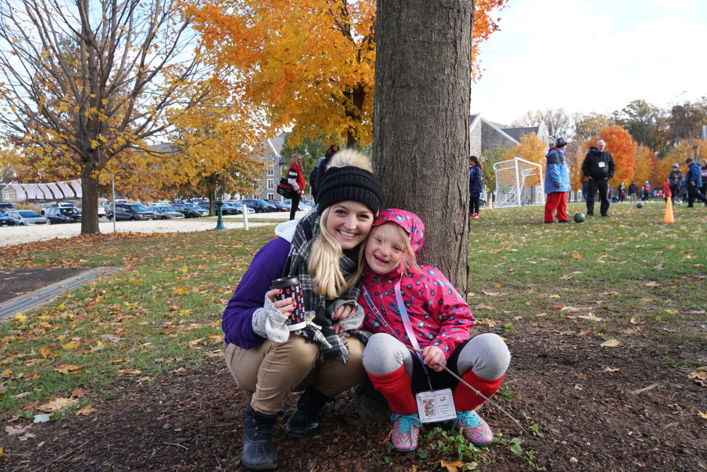
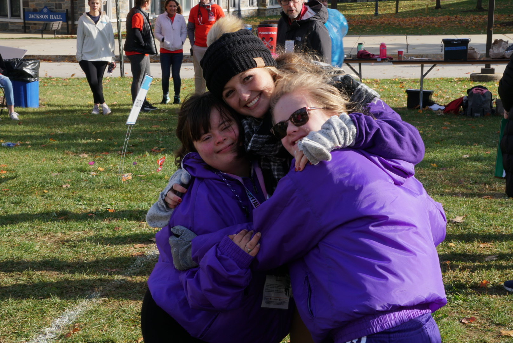

PHOTO GALLERY




Special Olympics is something that has become an extremely important part of my life at Villanova University. For those of you who do not know me, I have a younger brother with disabilities, or what I prefer to call different abilities. Grady was born when I was seven and diagnosed at eighteen months. From that day on, we have all had to adapt to some degree to what works for him, and what doesn’t. Grady taught me that life isn’t always about what I want. He inspires me to put others before myself. He is an absolute ray of light in my life. I am so lucky to have gotten to grow up with him, and he has taught me so many lessons. He has so many talents that many people do not. He is a phenomenal actor, who has no fear of judgement. He is completely comfortable with who he is and who he wants to be. Grady has taught me to embrace who I am and what I love. My brother’s lesson is simple; don’t be concerned with what others think of you, embrace your true self, and enjoy the people who love you as you are. When I got to Villanova, I knew I needed to find something that made me feel like I was home. This was Special Olympics for me. If you are even considering getting involved, I highly recommend it, especially Villanova Special Olympics of Pennsylvania. There are so many great ways to get involved, whether it be as a general volunteer or a pro-volunteer. Check out Villanova's Special Olympics page!